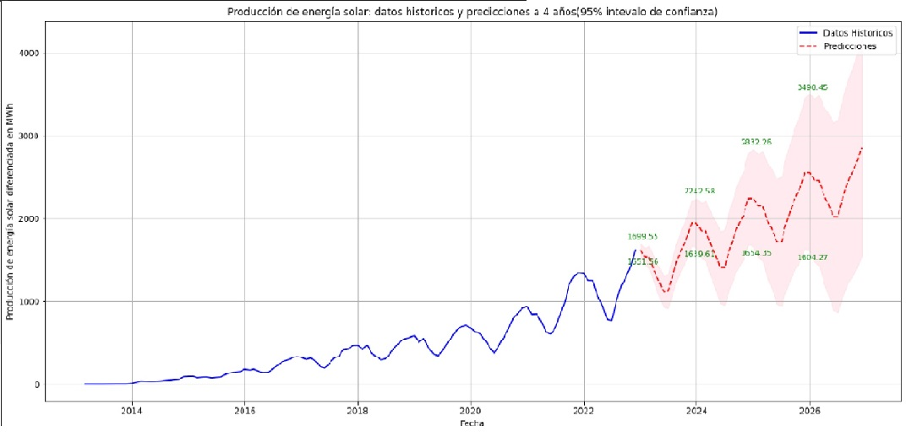
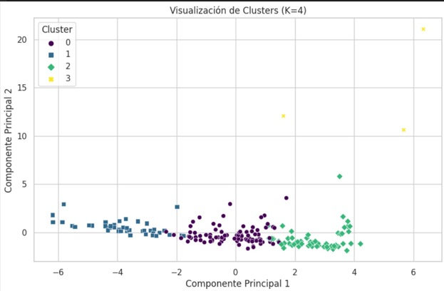

Proyectos
"Datos: Predicción de la producción de energía solar en chile para los proximos 4 años"
Datos se recopilaron del sitio web de la Agencia Internacional de Energía (AIE). este estudio nos muestra a travez de series de tiempo como la producción de la energía solar se desarrollara en los siguientes cuatro años segun el modelo SARIMA para los proximos 4 años
 Ver proyecto en GitHubExploración y Clustering de Características Globales
Utilizando técnicas como el análisis de componentes principales (PCA) y el método K-means, se identificaron patrones y tendencias subyacentes en los datos. Los resultados del proyecto revelan cuatro clusters distintos, cada uno representando un grupo de países con similitudes significativas en indicadores clave. Entre las características más destacadas se encuentran las emisiones de CO2, el PIB, la tasa de participación laboral y los niveles de educación.
 Ver Proyecto en GitHubSegmentación de clinetes por clusterizacion
Utilizando técnicas como el análisis de componentes principales (PCA) y el método K-means, se identificaron patrones y tendencias subyacentes en los datos. Los resultados del proyecto revelan cuatro clusters distintos, cada uno representando un grupo de países con similitudes significativas en indicadores clave. Entre las características más destacadas se encuentran las emisiones de CO2, el PIB, la tasa de participación laboral y los niveles de educación.
 Ver Proyecto en GitHub
Ver Proyecto en GitHub